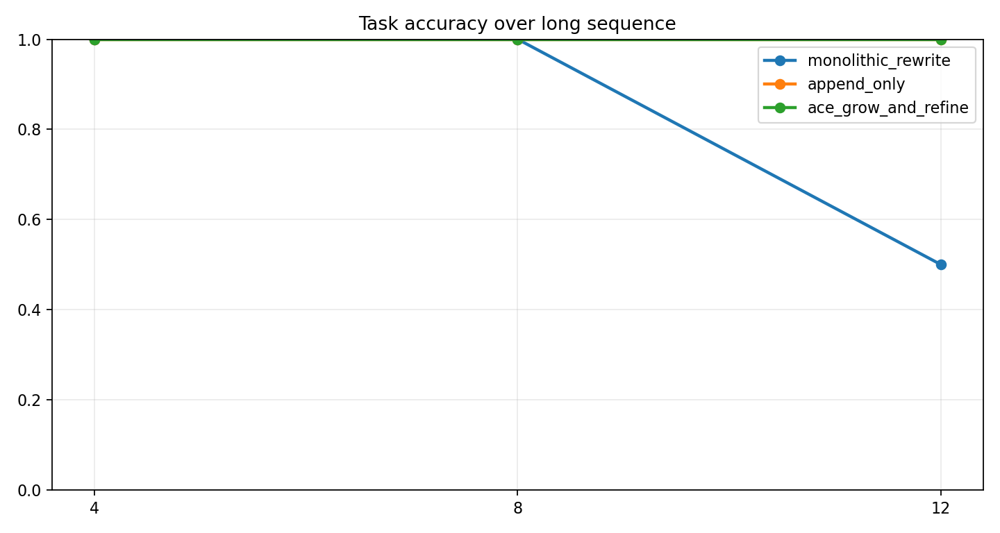
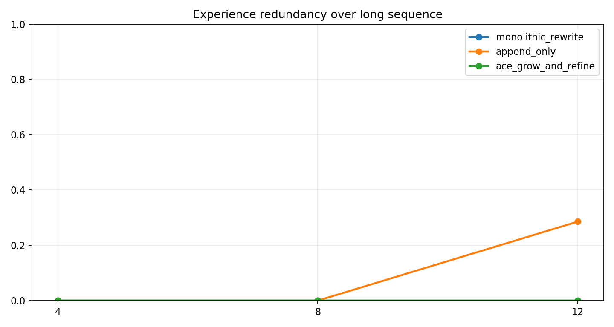

Run ID：exp4_20260514_131116
生成时间：2026-05-14T13:11:18
配置：`{"use_critic": true, "use_evolution": true, "use_experience_retrieval": true, "use_code_agent": true, "use_context_manager": true, "use_real_ace": false, "mock_mode": true}`
实验四在长序列任务中比较三种经验库更新策略，重点观察 context collapse、早期知识遗忘、冗余膨胀和最终任务准确率。
任务展开规模：12 个任务单元；本次 trace 数：36；成功 34，失败 2。
任务文件：`data/experiments/exp4_workbook.json`。
实验使用 `data/geodata/` 下的成都 POI 与行政区 GeoJSON 图层，任务集通过自然语言描述调用检索、查询、邻近、缓冲、叠加、空间连接、聚类、热点、统计和导出等 GIS 能力。
| 数据层 | 要素数 | 几何类型 | 字段示例 |
|---|---|---|---|
| 交通设施 | 20226 | Point | name, type, address, lng, lat, province |
| 住宿服务 | 6473 | Point | name, type, address, lng, lat, province |
| 体育 | 6753 | Point | name, type, address, lng, lat, province |
| 公司 | 42299 | Point | name, type, address, lng, lat, province |
| 医疗 | 12974 | Point | name, type, address, lng, lat, province |
| 商务住宅 | 11726 | Point | name, type, address, lng, lat, province |
| 成都行政区 | 24 | Polygon | NAME |
| 政府 | 6959 | Point | name, type, address, lng, lat, province |
| 生活服务 | 54729 | Point | name, type, address, lng, lat, province |
| 科教文化 | 10916 | Point | name, type, address, lng, lat, province |
| 购物 | 102214 | Point | name, type, address, lng, lat, province |
| 金融服务 | 7157 | Point | name, type, address, lng, lat, province |
| 风景 | 337 | Point | name, type, address, lng, lat, province |
| 餐饮 | 61101 | Point | name, type, address, lng, lat, province |
任务模板包含 `expected_tools` 和 `expected_outputs`，前者用于评估工具链选择，后者用于判断地图图层、表格结果和最小结果数量是否满足预期。
| 类别 | 任务数 |
|---|---|
| attribute_query | 2 |
| code_required | 1 |
| export_highlight | 3 |
| nearby_analysis | 3 |
| poi_search | 2 |
| temporal_query | 1 |
每个 trace 是一次任务在某个框架或消融组下的完整记录。报告中的指标均可由 trace 字段直接复算。
| 字段 | 含义 |
|---|---|
| task_id | 展开后的任务编号；包含模板编号、重复轮次或 batch 信息。 |
| agent_type | 执行该 trace 的框架、消融组或经验库策略。 |
| query | 自然语言 GIS 任务文本。 |
| category | 任务类别，例如 POI 检索、邻近分析、叠加分析、热点分析等。 |
| expected_tools | 任务设计时标注的期望工具链，用于计算工具选择准确率。 |
| selected_tools | 系统实际选择或模拟选择的工具链。 |
| execution_trace | 意图识别、工具选择、执行评估等关键步骤记录。 |
| errors / error_signature | 运行中出现的错误及其归一化签名，用于重复错误统计。 |
| critic_diagnosis | CriticAgent 产生的结构化诊断，消融时可为空或弱化。 |
| retrieved_experiences | 本次任务检索到的经验条目，用于经验复用率和经验有效性分析。 |
| generated_experience | 任务后沉淀的新经验，用于观察 Evolution 是否产生可复用知识。 |
| metrics | 单条 trace 的可计算指标，如 turns、runtime、execution_success、result_correctness、repair_success。 |
| structured_response | 实验一的新结构化返回，包含 selected_tools、output_types、entities、keywords、memory/experience/code 证据。 |
| validation | 实验一按参考答案自动评分的结果，包含总分、阈值、缺失项和分项得分。 |
| 指标 | 字段 | 计算方式 |
|---|---|---|
| 任务成功率 | success_rate / task_success_rate | 成功 trace 数 / trace 总数。success=true 记为 1，否则为 0。 |
| 工具选择准确率 | tool_selection_accuracy | 对每条 trace 计算 |expected_tools ∩ selected_tools| / |expected_tools|，再对有效 trace 求平均。 |
| 执行成功率 | execution_success_rate | 无 errors 且 metrics.execution_success=true 的 trace 数 / trace 总数。 |
| 结果正确率 | result_correctness | metrics.result_correctness 的算术平均值，取值范围 0-1。 |
| 平均轮数 | average_turns | metrics.turns 的算术平均值，用于衡量交互/推理链路长度。 |
| 平均耗时 | average_runtime / average_latency | metrics.runtime 的算术平均值，单位为秒。 |
| 用户干预次数 | user_intervention_count | 所有 trace 的 metrics.user_intervention_count 求和。 |
| 错误数 | error_count | 所有 trace 的 errors 列表长度求和。 |
| 重复错误率 | repeated_error_rate | 出现重复 error_signature 的错误 trace 数 / trace 总数。 |
| 修复成功率 | repair_success_rate / self_repair_rate | repair_attempted=true 的 trace 中 repair_success=true 的比例。 |
| 经验复用率 | experience_reuse_rate | retrieved_experiences 非空的 trace 数 / trace 总数。 |
| 知识保留率 | knowledge_retention_rate | Exp4 最终快照中仍保留的早期经验数 / 早期经验总数。 |
| 冗余率 | redundancy_rate | 经验文本指纹两两 Jaccard 相似度 >= 0.72 的组合数 / 组合总数。 |
| 上下文 token 数 | context_token_count | 中文字符、英文 token 和标点的近似加权计数，用于观察上下文膨胀。 |
| Collapse 事件数 | collapse_event_count | 相邻快照中知识保留率下降 >=0.25、准确率下降 >=0.2 或冗余率上升 >=0.25 的次数。 |
| 组别 | average_runtime | average_turns | collapse_event_count | description | error_count | execution_success_rate | experience_add_rate | experience_reuse_rate | final_context_token_count | final_redundancy_rate | final_task_accuracy | knowledge_retention_rate | name | repeated_error_rate | result_correctness | task_success_rate | tool_selection_accuracy |
|---|---|---|---|---|---|---|---|---|---|---|---|---|---|---|---|---|---|
| monolithic_rewrite | 0.128 | 3.775 | 1 | 每隔一段任务重写经验库摘要，容易覆盖早期经验。 | 2 | 0.833 | 0.500 | 0.333 | 482 | 0.000 | 0.500 | 0.000 | Monolithic Rewrite | 0.167 | 0.930 | 0.833 | 1.000 |
| append_only | 0.128 | 3.442 | 1 | 只追加新经验，不合并去重，早期经验仍在但检索噪声和冗余逐渐上升。 | 0 | 1.000 | 0.500 | 0.500 | 1140 | 0.286 | 1.000 | 1.000 | Append Only | 0.000 | 0.982 | 1.000 | 1.000 |
| ace_grow_and_refine | 0.128 | 3.142 | 0 | 增量写入、合并同类经验并保留早期关键经验，强调稳定复用。 | 0 | 1.000 | 0.500 | 0.500 | 792 | 0.000 | 1.000 | 1.000 | ACE Grow-and-Refine | 0.000 | 1.000 | 1.000 | 1.000 |
图表由当前 result.json 直接生成，便于论文或答辩材料引用。


实验四中 ACE grow-and-refine 最终准确率为 1.000，知识保留率为 1.000，可用于说明长上下文下的稳定性。
未启用 DeepSeek 自动总结；可在导出时勾选 AI 总结生成更自然的论文式分析。